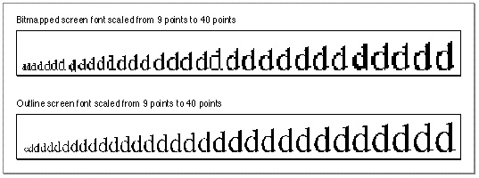
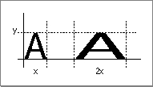
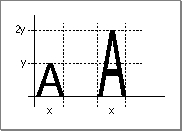
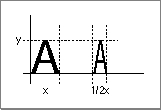

How the Font Manager Scales Fonts
Font scaling is the process of changing a glyph from one size or shape to another. The Font Manager and QuickDraw can scale bitmapped and outline fonts in three ways: changing a glyph's point size, modifying the glyph (but not its point size) for display on a different device, and altering the shape of the glyph.For bitmapped fonts, the Font Manager does not actually perform scaling of the glyph bitmaps. Instead, the Font Manager finds an appropriate font and computes the horizontal and vertical scaling factors that QuickDraw must apply to scale the bitmaps. QuickDraw performs all modifications of bitmapped font glyphs.
The simplest form of scaling occurs when the Font Manager returns scaling factors for QuickDraw to change a glyph from one point size to another on the same display device. If the glyph is bitmapped and the requested font size is not available, there are certain rules the Font Manager follows to create a new bitmapped glyph from an existing one (see "The Scaling Process for a Bitmapped Font" on page 4-21). If the glyph is from an outline font, the Font Manager uses the outline for that glyph to create a bitmap.
Figure 4-4 shows how the Font Manager and QuickDraw scale a bitmapped font and an outline font from 9 points to 40 points for screen display. The sizes of the bitmapped fonts available to the Font Manager to create all 32 sizes were 9, 10, 12, 14, 18, and 24 points. A single glyph outline produces a smoother bitmap in all point sizes.
Figure 4-4 A comparison of scaled bitmapped and outline fonts

The Font Manager produces better results by scaling glyphs from outline fonts, because it changes the font's original outline to the new size or shape, and then makes the bitmap. Outlines give better results than bitmaps when scaled, because the outlines are intended for use at all point sizes, whereas the bitmaps are not.The Font Manager also determines that a glyph must be scaled when moving it from one device to another device with a different resolution: for instance, from the screen to a printer. A bitmap that is 72 pixels high on a 72-dpi screen measures one inch, but on a 144-dpi printer it measures a half inch. In order to print a figure the same size as the original screen bitmap, QuickDraw needs a bitmap twice the size of the original. If there are no bitmaps available in twice the point size of the bitmap that appears on the screen, the Font Manager returns the proper scaling factors, and QuickDraw scales the original bitmap to twice its original size in order to draw it on the printer.
With some QuickDraw calls, your application can also use the Font Manager to explicitly scale a glyph by stretching or shrinking it, which changes the glyph from a familiar point size to something a little stranger--for example, a glyph that is 12 points high but as wide as a whole page of text. Your application tells the Font Manager how to scale a glyph using font scaling factors, which are represented as proportions or fractions that indicate how the Font Manager should scale the glyph in the vertical and horizontal directions. The ratio given by the font scaling factors determines whether the glyph grows or shrinks: if the ratio is greater than one, the glyph increases in size, and if it is less than one, the glyph decreases in size. If the font scaling factors are 1-to-1 (1/1) for both horizontal and vertical scaling, the glyph does not change size.
In some circumstances, the Font Manager finds a font and returns different scaling factors to QuickDraw. The scaling factors in a QuickDraw font request tell the Font Manager how much QuickDraw wants to scale the font, and the scaling factors returned by the Font Manager tell QuickDraw how much to actually scale the glyphs before drawing them.
In Figure 4-5, the font scaling factors are 2/1 in the horizontal direction and 1/1 in the vertical direction. The glyph stays the same height, but grows twice as large in width.Figure 4-5 A glyph stretched horizontally

In Figure 4-6, the font scaling factors are 2/1 in the vertical direction and 1/1 in
the horizontal direction. The glyph stays the same width, but grows to twice its
original height.Figure 4-6 A glyph stretched vertically

In Figure 4-7, the font scaling factors are 1/1 in the vertical direction and 1/2 in the horizontal direction. The glyph stays the same height but retains only half its width.Figure 4-7 A glyph condensed horizontally

If the font scaling factors are 2/1 in both directions and the font is an outline font, then the Font Manager computes the size of the glyph as twice the specified size and QuickDraw draws the glyph. With bitmapped fonts, QuickDraw first looks for a bitmap at twice the size of the original before redrawing the glyph at the new point size.Many routines use the value of the font scaling factors in order to calculate the best measurements for text in the current graphics port record. You can find the current horizontal and vertical scaling factors in the global variables
FScaleHFactandFScaleVFact. The exact value of the font output scaling factors can be found by multiplying the value of the global width table'shOutputandvOutputfields by the values of thehFactorandvFactorfields, also of the global width table, respectively. The description of the global width table begins on page 4-39.The Scaling Process for a Bitmapped Font
Although the Font Manager does not scale the glyph bitmaps of a bitmapped font, it does compute the scaling factors that QuickDraw uses to perform the scaling. The Font Manager computes scaling factors other than 1/1 when the exact point size requested is not available. Font scaling is the default behavior; however, you can disable it, as described below. When the Font Manager cannot find the proper bitmapped font that QuickDraw has requested and font scaling is enabled, it uses the following procedure:You can disable the scaling of bitmapped fonts in your programs by calling the
- The Font Manager looks for a font of the same font family that is twice the size of the font requested. If it finds that font, the Font Manager computes and returns to QuickDraw factors to scale it down to the requested size.
- The Font Manager looks for a font of the same font family that is half the size of the font requested. If it finds that font, the Font Manager computes and returns to QuickDraw factors to scale it up to the requested size.
- The Font Manager looks for a font of the same font family that is the next larger size of the font requested. If it finds that font, the Font Manager computes and returns to QuickDraw factors to scale it down to the requested size.
- The Font Manager looks for a font of the same font family that is the next smaller size of the font requested. If it finds that font, the Font Manager computes and returns to QuickDraw factors to scale it up to the requested size.
- If the Font Manager cannot find any size of that font family, it returns the application font, system font, or neighborhood base font, as described in the section "How the Font Manager Responds to a Font Request" beginning on page 4-17. The Font Manager computes and returns to QuickDraw the factors to scale that font to the requested size.
SetFScaleDisableprocedure. When the Font Manager cannot find the proper bitmapped font that QuickDraw has requested and font scaling is disabled, the Font Manager looks for a different font to substitute instead of scaling. TheSetFScaleDisableprocedure is described on page 4-55.With scaling disabled, the Font Manager looks for a font with characters with the correct width, which may mean that their height is smaller than the requested size. The Font Manager returns this font and returns scaling factors of 1/1, so that QuickDraw does not scale the bitmaps. QuickDraw draws the smaller font, the widths of which produce the spacing of the requested font. This is faster than font scaling and accurately mirrors the word spacing and line breaks that the document will have when printed, especially if fractional character widths are used. Disabling and enabling of font scaling are described in the section "Using Fractional Glyph Widths and Font Scaling" on page 4-34.
- Note
- A font request made with scaling disabled does not necessarily return the same result as an identical request with scaling enabled. The widths are sure to be the same only if fractional widths are enabled, the font does not have a glyph-width table, and the font is a member of a family record with a family character-width table. Fractional widths and width tables are discussed in "How the Font Manager Calculates Glyph Widths" on page 4-22.

The Scaling Process for an Outline Font
The Font Manager always scales an outline font in order to produce a bitmapped glyph in the requested size, regardless of whether font scaling for bitmapped fonts is enabled or disabled. An outline font is considered to be the model for all possible point sizes, so the Font Manager is not scaling it from one "real" size to a "created" size, the way it does with a bitmapped font; it is drawing the outline in the requested point size, so that it can then create the bitmapped glyph.